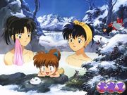
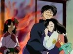

Sango
 De: La Frikipedia, la enciclopedia extremadamente seria.
De: La Frikipedia, la enciclopedia extremadamente seria.
«Se lo merece por libidinoso...!»
~ Sango a Mironku cuando se desquitaba con él, después de pegarle una cachetada
De la serie grandes personajes:
Podemos ver a Sango con su ropa normal y su traje para pelear. No importa que use siempre se vera buenisima
| Nacimiento
|
Nacio en un pueblo de asesinos
|
| Muerte
|
|
| Ocupación
|
Andar de celosa
|
| Nacionalidad
|
Japonesa
|
| Malo o bueno
|
Esta riquiiiissssiiimaa
|
| Atentados contra la humanidad
|
ninguno
|
| Religión
|
|
| Notas
|
le gusta que Miroku le toque el culo
|
Sango (珊瑚 en alemán) es una humana- exterminadora de demonios del anime Inuyasha. A sus 16 años Pierde a toda su familia y esclavos por causa de su hermano (Kohanku), vió morir a su padre y sus compañeros de trabajos, pero no quiso perder la oportunidad de su vida, así que... ya sabrán lo que vino después. Entonces, además de ser una pendeja zoofilica, también es ninfómana y necrofílica.
Aficiones

Aquí Kagome y Sango se cambian de ropa, así Sango podra seducir a Miroku con esa falita.
- Pasar tiempo
violándose a con Kirara
- Asesinar demonios Inocentes
- Pegarle cachetadas a Miroku
- Sentir celos de cualquier mujer que se acerque a 100 metros de él
- Llorar
- Escuchar los lloriqueos de Mekago
- Sostener su Búmeran
- Serle infiel a Miroku
Mascotas
- Kirara (la cuál monta para
violarlaescapar de los malos)
- Mironku (lo utiliza para sacarse la rabia)
Armas y utensilios
- Hiraikotsu: es un enorme bumerán hecho con huesos de sus víctimas, con los que derriba a casi cualquier enemigo y golpea a Mironku casi todos los días.
- Sable o espada: arma secundaria, la tiene al pedo porque no la usa nunca.
- Mascarilla anti-veneno: con la cual puede respirar normalmente cuando hay veneno en la atmósfera.
- Esferas de veneno: bolitas que saca de su traje (el cuál no tiene bolsillos, así que se imaginarán en donde las guarda) que usa para dormir a los demonios con sentido del olfato (como hizo con Inuyasha).
- Veneno mortal: tiene una pequeña concha (podés pensar mal) con veneno que mata casi al instante (ahora sabemos porque Mironku no quiere acercársele).
También tiene diferentes objetos de ayuda dentro de su traje de exterminadora, como sogas debajo de sus hombreras, etc. (como dije antes, no tiene bolsillos).
Relaciones
 Bañandose las dos con shipoo, vaya niño tiene mucha suerte...
Aquí podemos ver como Miroku se le cumplio su sueño de tirarse a Sango
Amor o sexo
 Así se pone cuando se le acerca cualquier chica. que miedo...
- Kagome: Cuando están solas por las noches en las haguas termales, junto con Shippo (a este lo obliga).
Se arma una orgía.
- Kirara: Cuando está necesitada, ¿Esto se considera zoofilia? Espero que sí.
- Kohaku: su hermano-zombie-sirviente, lo usa como objeto sexual
- Inuyasha: Algún que otro polvo cuando no los ve nadie.
Leyes del anime que Sango cumple.
Esta sección esta compuesta por varios fragmentos de el artículo Anime, de la Frikipedia.
- 34. Ley de la Capacitancia Extradimensional: Todos los personajes femeninos en anime tienen un espacio de almacenamiento extradimensional de volumen variable en alguna parte de su persona del que pueden obtener instantáneamente cualquier objeto en un momento dado (de esto ya hemos hablado en Armas y Utensilios).
- 51. Ley de la Deformación Facial Femenina: Toda mujer tiene la habilidad de deformar su rostro en caso de enojo, especialmente por acción de celos al tipo que supuestamente no ama. A esto se le añade un aumento de fuerza si el chico la insulta.
- 54. Ley del Maquillaje Eterno: El maquillaje de una mujer NUNCA debe correrse por más golpes, viento, tierra, energía, sudor, etc que reciba. Al mismo tiempo, debe de estar impecable el día siguiente después de dormir. Además, el hecho de convertirte en chica por una reacción al agua te garantizará una sombra instantánea y perfecta sobre tus párpados.
- 55. Ley de la Piel Femenina Luminosa: Toda mujer tiene la capacidad de irradiar luz en caso de enojo: se cree que es un un efecto secundario de la ley anterior por el excesivo contacto del maquillaje con la piel, o consecuencia de la siguiente.
- 77. Ley de la Estabilidad Indumentaria: Análogo a la ley de Permanencia Folicular, la ropa es el material más resistente del mundo, capaz de soportar las mayores temperaturas y presiones del universo conocido, superando así la resistencia del diamante: nunca se verá la ropa de un personaje en llamas, corroída por ácidos u otros productos (clara excepción si dicho personaje tiene unas buenas peras), etc.
- 81. Ley de la Inmovilidad Ofensiva: El movimiento de un individuo en el combate cuerpo a cuerpo será inversamente proporcional al poder que éste tenga sobre sus adversarios: A mayor poder de combate, menos tendrá que moverse para destruir a sus enemigos.(claro ejemplo: el hiraikotsu)
- 100. Ley de la Relación Atuendo-Poder Cuando en algún momento de la serie un personaje cambie de atuendo, obtendrá más poder, independientemente de cómo haya cambiado dicho individuo. (su traje de exterminadora)
- 124. Ley de la Pupila Veloz o Temblorosa: Si un personaje (sea malo o bueno) es sorprendido por la espalda, abre una puerta y ve a un ser querido muerto, o ve cómo el contrario se transforma en un Godzilla,o ve a sus padres o abuelos intimando, la pupila de éste se volverá muy pequeña en menos de medio segundo y/o empezará a temblar mientras el personaje mira asombrado el show.
- 142. Ley del viento a tu favor: No importa la situación, si llueve, como si se está duchando, el pelo de los protagonistas siempre tenderá a moverse exageradamente de un lado a otro como si estuviese modelando.
De donde saqué la Info-Mierda
Enlace Externo
Autor(es):
- Fordus
- Shadowmura
- Dara
- Susana rg
- Thelordg95
- Jidef
Frikipedia 2005-2016, Licencia
GFDL 1.2 - Extraído por FrikiLeaks